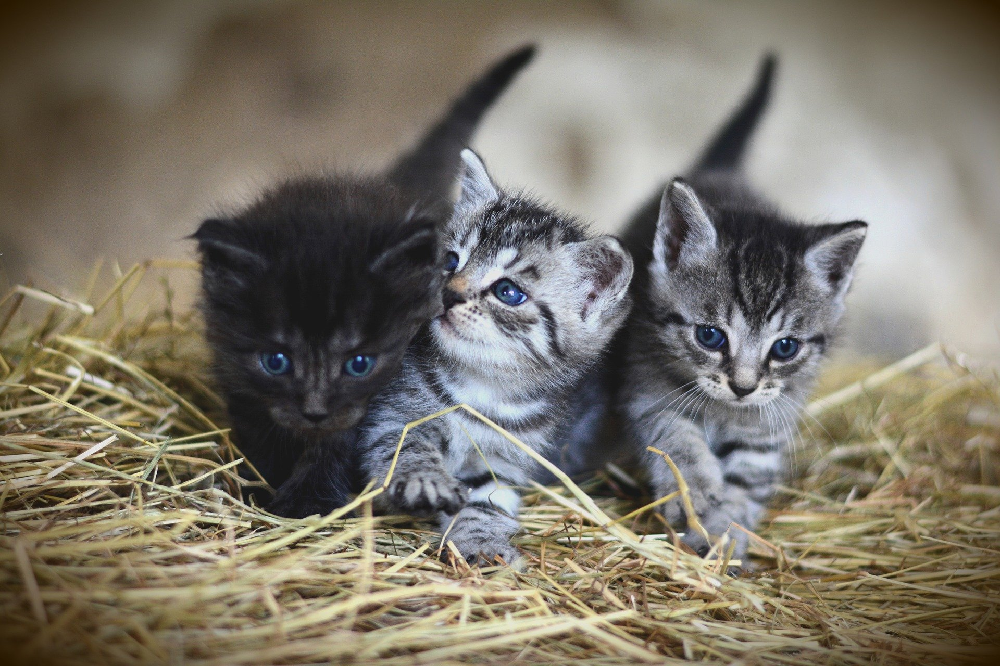

z-index2
고양이는 귀엽습니다
고양이는 다소 느슨한 피부를 가지고 있으며, 이것은 고양이가 포식자나 다른 고양이와 싸울 때 그들에게 잡히더라도 몸을 돌려서 마주볼 수 있도록 해준다. 이것은 또한 수의학적으로도 주사를 쉽게 놓게 하는 이점이 있다. 실제로, 신부전증이 있는 고양이들의 생명은 때때로 투석치료 대신 정기적으로 다량의 약을 피부에 주사함으로써 몇 년씩 연장되기도 한다.
목뒤의 특히 느슨한 피부는 뒷덜미이며, 어미 고양이가 새끼를 운반 할 때 새끼를 잡는 부위이다. 따라서, 고양이들은 그 부위를 잡혔을 때 조용해지고 순종적으로 되는 경향이 있다. 이러한 행동은 다 자라서도 이어져, 수컷이 교미를 위하여 암컷에 올라 탔을 때 뒷덜미를 잡음으로써 암컷을 움직이지 못하게 하며 교미 중 암컷이 도망가지 못하도록 한다.
